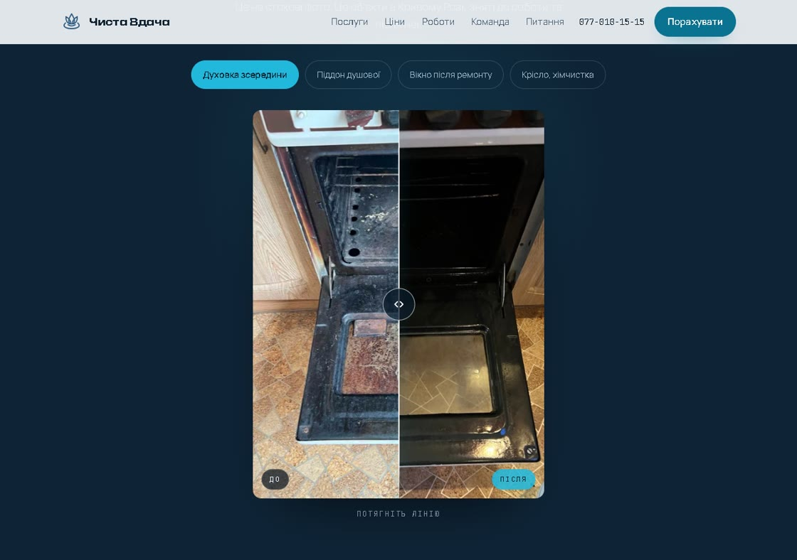

реальний клієнт
Чиста Вдача
Задача була не в красі. Люди не вірять клінінгу, поки не побачать результат своїми очима, а фото «до» ніхто не показує, бо воно непривабливе.
Рішення: галерея, де «до» і «після» лежать на одному кадрі, і ви самі тягнете межу між ними. Ціна названа до початку роботи, а не після.